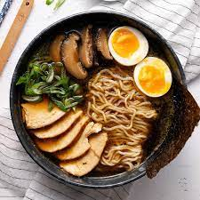

Este es uno de los capítulos favoritos por todos los amantes de lo japonés. La gastronomía japonesa se ha posicionado en los últimos años como una de las mejores del mundo, de las más saludables, variadas y deliciosas. Probablemente su “plato” más conocido es el sushi. Pero harías mal si pensaras que esto es todo lo que tiene que ofrecer la comida en Japón.
